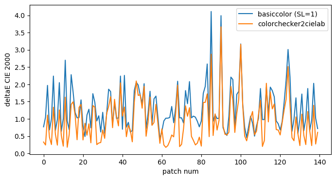

from colorchecker2cielab import extract_color_patches, read_target_data, read_basiccolor_data, RGBs_to_LABs, compute_deltaEs
import pandas as pdComparison with BasICColor
It is now interesting to compare the output of our computations with the report produced by BasICColor Input6 Pro.
target_data = '/home/frank/Work/DATA/colorchecker2cielab-data/AG_003_20221230_2.txt'
bcol_data = '/home/frank/Work/DATA/colorchecker2cielab-data/BasiCColor_sk-c-1833.xlsx'
tif_file = '/home/frank/Work/DATA/colorchecker2cielab-data/sk-C-1833_135MB.tif'bcol_df = read_basiccolor_data(bcol_data)
bcol_LABs = bcol_df.loc[:, ['bcol_L*', 'bcol_a*', 'bcol_b*']]
print('BasICColor report: \n')
print(bcol_df.to_string())BasICColor report:
bcol_R bcol_G bcol_B ref_L* ref_a* ref_b* bcol_L* bcol_a* bcol_b* bcol_ΔE*00_(SL=1) bcol_Δab*
A1 95.58 95.78 94.15 95.35 -0.75 2.56 95.59 -0.27 2.76 0.77 0.73
B1 49.25 49.46 49.12 49.51 -0.53 0.38 49.37 0.09 0.88 1.05 1.04
C1 7.83 7.53 7.47 8.59 0.26 -0.70 7.62 0.94 0.75 1.97 1.72
D1 95.86 96.18 94.72 95.62 -0.80 2.35 95.97 -0.40 2.45 0.68 0.59
E1 49.26 49.50 49.12 49.53 -0.54 0.41 49.39 0.04 0.91 1.00 0.99
F1 7.51 7.22 7.19 8.47 0.16 -0.86 7.31 0.95 0.71 2.24 1.91
G1 95.74 96.09 94.66 95.50 -0.82 2.40 95.87 -0.43 2.39 0.67 0.56
H1 49.25 49.48 49.16 49.53 -0.54 0.44 49.38 0.06 0.84 0.98 0.97
I1 7.39 7.25 7.10 8.44 0.27 -0.82 7.28 0.68 0.80 2.05 1.69
J1 95.85 96.21 94.80 95.63 -0.81 2.34 95.99 -0.45 2.35 0.64 0.52
K1 49.22 49.45 49.20 49.46 -0.55 0.34 49.36 0.08 0.74 1.01 1.01
L1 7.80 7.43 7.11 9.55 0.36 -0.45 7.52 0.96 1.17 2.70 1.79
M1 49.28 49.53 49.30 49.37 -0.53 0.33 49.43 0.05 0.70 0.94 0.94
N1 95.61 95.94 94.46 95.34 -0.80 2.46 95.72 -0.40 2.47 0.69 0.57
A2 7.61 7.43 7.41 9.05 0.24 -0.89 7.49 0.76 0.63 2.28 1.67
B2 51.49 12.40 40.06 33.06 51.60 -10.48 34.12 51.16 -7.41 1.77 1.42
C2 25.45 15.27 32.13 19.99 20.10 -18.86 20.81 19.04 -17.39 1.19 0.86
D2 82.13 84.39 89.30 83.60 -2.18 -8.35 84.08 -1.49 -7.86 1.03 0.90
E2 39.78 27.31 18.96 32.14 19.46 22.48 31.59 18.19 20.92 1.04 0.89
F2 73.97 60.56 53.21 63.36 20.01 19.98 64.89 19.61 19.56 1.55 0.26
G2 40.02 46.48 61.60 45.82 -3.99 -25.32 46.09 -3.28 -24.55 0.82 0.78
H2 33.81 41.24 18.69 38.10 -16.74 29.18 37.80 -16.61 28.31 0.49 0.39
I2 51.00 48.75 68.09 51.22 9.39 -27.35 51.38 9.98 -26.22 1.11 1.10
J2 53.85 75.36 68.56 68.08 -35.24 -0.89 69.05 -34.50 0.30 1.28 0.83
K2 91.30 82.67 73.62 84.76 10.96 17.84 84.99 11.81 18.76 0.74 0.71
L2 35.99 10.06 16.77 21.66 35.94 9.72 22.80 35.46 11.71 1.73 1.30
M2 66.57 15.87 37.71 42.18 63.63 11.97 43.61 63.35 12.77 1.48 0.40
N2 49.35 49.59 49.36 49.42 -0.54 0.39 49.49 0.06 0.70 0.94 0.94
A3 49.20 49.42 49.08 49.49 -0.56 0.33 49.32 0.07 0.88 1.09 1.08
B3 68.93 54.13 72.66 60.96 26.65 -18.39 61.08 26.79 -17.39 0.62 0.60
C3 42.48 35.82 63.54 41.38 18.14 -36.85 41.18 18.79 -35.43 1.19 1.18
D3 90.56 81.79 85.07 84.50 14.49 0.52 85.01 14.67 0.86 0.58 0.27
E3 79.13 52.12 17.70 61.35 37.18 68.91 61.70 38.06 66.80 1.15 1.10
F3 28.52 30.27 65.26 34.80 11.99 -51.74 34.60 13.18 -49.34 1.86 1.85
G3 69.60 30.85 35.76 47.29 53.15 22.33 48.92 53.99 23.92 1.79 0.74
H3 29.49 9.38 38.85 21.60 32.81 -28.91 21.52 31.89 -27.10 0.82 0.81
I3 65.96 74.99 28.06 70.39 -25.76 64.39 70.02 -23.20 59.42 1.47 1.42
J3 80.27 65.36 14.43 69.68 18.58 78.96 68.91 18.22 76.09 1.01 0.65
K3 83.22 92.60 85.41 88.42 -17.05 6.35 89.22 -16.09 6.01 1.03 0.65
L3 71.88 15.86 15.28 44.00 66.29 51.04 46.08 67.84 53.72 2.24 0.85
M3 30.21 5.92 25.17 19.20 34.85 -7.48 19.08 33.78 -8.32 0.70 0.69
N3 7.84 7.39 7.32 8.69 0.32 -0.71 7.53 1.17 0.85 2.26 1.94
A4 95.90 96.22 94.83 95.57 -0.80 2.24 96.01 -0.38 2.35 0.76 0.62
B4 41.95 4.49 54.59 29.88 50.17 -41.86 29.52 48.86 -39.52 0.90 0.83
C4 11.31 21.36 41.95 21.10 -1.20 -34.33 21.57 -1.83 -32.72 0.62 0.40
D4 76.33 88.22 84.84 83.97 -19.35 -1.10 84.44 -18.79 -0.68 0.66 0.46
E4 10.95 9.89 51.53 19.29 23.34 -59.46 18.38 20.95 -53.77 1.82 1.58
F4 39.68 60.95 27.98 51.70 -44.14 39.12 53.53 -42.16 36.55 2.06 0.93
G4 63.68 3.66 14.85 37.28 65.62 42.67 39.19 65.61 43.82 1.98 0.52
H4 87.62 80.35 20.03 80.85 2.30 88.86 80.50 4.13 83.00 1.69 1.65
I4 67.11 28.83 57.07 48.07 56.26 -14.81 48.51 55.11 -11.60 1.45 1.38
J4 24.38 53.61 67.62 46.67 -32.13 -30.93 48.60 -30.66 -30.72 2.02 0.61
K4 85.37 82.98 88.43 83.82 5.10 -6.02 84.20 5.64 -6.09 0.71 0.60
L4 74.90 51.74 59.01 60.42 35.97 3.89 61.22 36.00 5.28 1.16 0.83
M4 67.61 11.52 24.50 41.17 65.74 33.22 42.96 66.18 33.79 1.80 0.22
N4 96.01 96.43 95.27 95.60 -0.82 2.23 96.21 -0.46 1.96 0.82 0.56
A5 7.61 7.53 7.54 8.47 0.30 -0.70 7.56 0.62 0.53 1.58 1.29
B5 31.69 51.44 79.33 49.04 -13.81 -49.04 49.94 -11.55 -47.41 1.66 1.40
C5 46.36 63.27 80.41 59.80 -17.93 -31.89 60.47 -16.48 -31.96 1.05 0.80
D5 90.57 81.87 80.04 84.45 13.18 7.80 84.69 13.40 8.28 0.42 0.35
E5 95.76 96.18 95.03 95.65 -0.85 2.11 95.96 -0.47 1.93 0.64 0.56
F5 78.65 78.62 78.50 78.75 -0.08 0.35 78.62 0.51 0.68 0.94 0.93
G5 64.51 64.78 64.84 64.83 -0.45 -0.33 64.70 0.11 0.26 1.02 1.01
H5 49.14 49.36 49.09 49.28 -0.54 0.35 49.27 0.09 0.78 1.02 1.02
I5 34.61 34.87 34.69 34.37 -0.44 0.00 34.77 0.06 0.62 1.04 0.96
J5 15.31 15.80 16.23 15.18 -0.88 -1.12 15.68 -0.14 -0.39 1.36 1.26
K5 77.26 86.09 88.99 82.98 -12.66 -8.83 83.67 -12.01 -8.31 0.89 0.57
L5 77.59 53.20 51.81 61.75 37.11 17.62 62.64 36.59 19.04 1.33 0.98
M5 82.55 27.74 23.67 53.63 67.17 50.15 55.25 70.77 54.54 2.09 1.31
N5 49.32 49.52 49.27 49.37 -0.52 0.33 49.44 0.12 0.75 1.03 1.03
A6 49.14 49.37 49.09 49.44 -0.54 0.31 49.28 0.07 0.78 1.03 1.02
B6 41.41 65.99 77.08 60.10 -30.10 -26.67 60.92 -29.42 -26.07 0.88 0.33
C6 10.06 26.16 33.61 21.55 -17.05 -17.59 23.21 -17.59 -16.59 1.82 0.75
D6 81.93 85.49 66.38 83.32 -11.78 26.26 83.11 -9.79 26.14 1.44 1.42
E6 9.13 8.52 8.11 8.76 0.43 -0.29 8.69 1.33 1.44 2.08 2.08
F6 30.00 29.91 29.75 29.30 0.13 0.28 29.93 0.59 0.78 1.03 0.82
G6 39.45 39.66 39.38 39.19 -0.49 0.25 39.57 0.09 0.80 1.08 1.01
H6 59.92 59.98 60.09 59.75 -0.17 -0.19 59.97 0.44 0.30 1.05 1.03
I6 74.29 74.17 74.32 74.59 0.21 -0.09 74.22 0.72 0.35 0.93 0.86
J6 87.02 87.63 87.98 87.36 -0.86 -0.35 87.46 -0.33 -0.36 0.77 0.76
K6 69.58 69.78 70.07 69.99 -0.24 -0.52 69.74 0.27 -0.03 0.94 0.91
L6 87.71 50.31 13.46 63.63 51.26 79.10 65.17 52.58 78.34 1.74 0.81
M6 94.56 75.20 20.43 81.85 22.67 85.56 80.31 24.72 85.09 1.94 1.19
N6 8.46 7.78 7.43 8.88 0.37 -0.59 7.97 1.45 1.38 2.59 2.42
A7 95.50 95.83 94.41 95.44 -0.85 2.37 95.62 -0.40 2.38 0.67 0.64
B7 7.22 26.49 26.94 18.23 -25.24 -7.58 22.33 -25.56 -7.41 4.11 0.22
C7 52.19 60.69 80.23 59.96 -5.50 -32.60 60.19 -4.45 -31.90 0.93 0.90
D7 75.86 54.45 40.36 61.97 29.60 36.28 61.90 30.91 35.30 1.12 1.12
E7 85.66 70.90 60.95 75.73 19.54 22.65 75.54 21.25 24.16 1.01 0.99
F7 70.79 60.71 47.97 62.78 13.06 26.02 63.45 13.62 25.14 1.02 0.78
G7 47.43 36.35 23.89 43.65 15.72 26.96 39.72 15.57 25.60 3.99 0.69
H7 74.25 64.26 57.63 66.86 13.99 16.71 67.29 14.45 16.19 0.75 0.62
I7 57.46 39.13 19.70 44.81 25.79 40.65 45.39 26.04 40.72 0.60 0.13
J7 74.65 57.15 46.96 63.42 25.00 26.80 63.03 25.48 26.65 0.52 0.34
K7 45.11 45.12 44.63 44.45 -0.12 0.63 45.08 0.34 1.20 1.08 0.88
L7 71.69 73.02 0.00 72.21 -11.41 87.21 70.21 -10.64 82.71 2.21 0.94
M7 87.41 78.57 0.26 81.23 5.33 95.11 79.22 6.55 94.00 2.14 0.72
N7 95.93 96.27 95.03 95.64 -0.80 2.24 96.06 -0.36 2.11 0.77 0.64
A8 7.66 7.64 7.48 8.42 0.29 -0.77 7.63 0.49 0.75 1.71 1.51
B8 38.35 67.96 68.59 59.18 -40.97 -13.40 60.90 -41.66 -12.72 1.80 0.54
C8 24.31 60.81 59.44 49.75 -48.87 -11.43 52.90 -49.61 -11.02 3.17 0.38
D8 73.96 60.32 53.98 63.44 20.85 18.90 64.80 20.13 18.25 1.43 0.44
E8 86.56 65.83 57.33 73.40 29.02 25.35 73.04 30.53 26.36 0.76 0.67
F8 71.01 61.19 53.18 63.79 13.74 17.48 64.08 13.97 18.10 0.46 0.35
G8 72.54 61.56 54.89 64.25 15.57 16.61 64.97 16.00 16.91 0.78 0.29
H8 73.29 61.89 54.34 64.35 16.61 18.82 65.41 16.49 18.48 1.08 0.19
I8 43.75 32.70 19.56 35.64 16.70 27.67 36.09 15.51 26.57 0.87 0.75
J8 76.64 60.92 48.96 65.83 21.96 28.22 65.93 22.51 27.88 0.50 0.49
K8 20.75 20.96 20.66 20.24 -0.10 0.42 20.87 0.11 0.82 0.80 0.49
L8 65.93 60.72 24.14 61.58 2.86 56.24 60.80 3.01 54.05 1.01 0.65
M8 68.70 73.85 10.98 71.57 -18.77 77.61 69.85 -17.22 75.26 1.88 0.77
N8 49.25 49.48 49.22 49.31 -0.53 0.35 49.38 0.07 0.75 0.98 0.97
A9 48.88 49.13 48.90 49.34 -0.54 0.35 49.03 0.05 0.70 0.98 0.93
B9 21.49 20.14 11.20 19.10 1.60 12.31 20.05 0.76 14.15 1.92 1.66
C9 46.16 67.82 47.05 59.68 -40.69 19.57 60.69 -39.73 20.21 1.15 0.56
D9 29.99 60.62 41.79 50.40 -53.33 13.94 52.18 -52.09 14.96 1.92 0.71
E9 12.87 26.29 18.45 20.57 -23.24 5.67 22.35 -22.64 5.90 1.82 0.38
F9 42.77 68.28 55.37 59.26 -43.65 7.36 60.84 -42.75 7.82 1.64 0.45
G9 52.24 64.82 32.48 59.79 -29.07 39.25 59.39 -27.34 39.44 0.94 0.85
H9 35.07 59.64 18.70 50.73 -49.58 43.54 51.42 -48.91 44.55 0.86 0.51
I9 43.97 70.17 28.04 60.99 -54.10 46.27 61.24 -52.15 46.30 0.68 0.64
J9 70.36 57.24 27.76 61.30 16.26 51.36 60.60 16.76 50.34 0.92 0.59
K9 59.46 63.57 23.02 61.68 -14.73 53.90 60.38 -13.52 53.46 1.47 0.67
L9 64.90 76.22 12.87 72.26 -29.51 71.44 70.34 -28.45 73.38 2.11 0.87
M9 29.20 19.94 10.69 20.74 13.45 16.79 22.93 13.32 19.92 3.01 2.06
N9 8.20 7.91 7.63 9.18 0.36 -0.68 7.98 0.88 1.07 2.21 1.85
A10 95.08 95.42 93.99 95.45 -0.82 2.31 95.20 -0.42 2.40 0.64 0.59
B10 48.97 49.23 48.95 49.47 -0.54 0.33 49.12 0.02 0.76 0.99 0.93
C10 7.72 7.69 7.41 8.50 0.31 -0.47 7.67 0.48 0.91 1.61 1.38
D10 95.32 95.69 94.43 95.59 -0.82 2.21 95.48 -0.42 2.13 0.58 0.57
E10 49.02 49.25 49.04 49.31 -0.53 0.32 49.16 0.09 0.67 0.99 0.98
F10 7.97 7.80 7.56 8.48 0.35 -0.61 7.84 0.69 0.95 1.72 1.59
G10 95.34 95.65 94.33 95.49 -0.80 2.27 95.45 -0.34 2.25 0.66 0.66
H10 49.13 49.36 49.10 49.36 -0.54 0.36 49.27 0.09 0.75 1.01 1.01
I10 8.17 7.92 7.54 9.01 0.38 -0.30 7.97 0.80 1.20 1.88 1.57
J10 95.57 95.93 94.75 95.59 -0.81 2.19 95.72 -0.37 2.01 0.66 0.65
K10 49.14 49.36 49.09 49.38 -0.50 0.35 49.27 0.09 0.76 0.97 0.96
L10 8.22 7.98 7.49 9.15 0.49 -0.35 8.02 0.75 1.34 2.03 1.68
M10 49.14 49.37 49.18 49.43 -0.54 0.31 49.28 0.10 0.64 1.02 1.00
N10 95.39 95.69 94.44 95.36 -0.79 2.31 95.50 -0.31 2.16 0.72 0.70In the table above we see on the left the bcol_RGB columns. These are the RGB values that were extracted from the TIF image of the target by BasICColor. Next we find the ref_L*a*b* columns. These are the measured CIELAB values that are tabulated for this specific Colorchecker target. Next we see the bcol_L*a*b* values that are computed by BasICColor from the extracted RGB values for all color patches. Finally on the right we find two deltaE columns that indicate the color differences between the reference CIELAB values and the computed CIELAB values. The bcol_ΔE*00_(SL=1) indicates the deltaE CIE2000 color difference that has been adapted by setting SL to 1. Not sure yet how this choice has been motivated. The last column most probably indicates the CIE1976 deltaE color difference.
Now let’s create a similar report table using the colorchecker2cielab functions.
rectangles, RGBs = extract_color_patches(tif_file, make_plot=False)
ref_LABs = read_target_data(target_data)
LABs = RGBs_to_LABs(RGBs)
deltas = compute_deltaEs(ref_LABs, LABs)report = pd.concat([RGBs*100, deltas], axis=1)print('Colorchecker2cielab report: \n')
print(report.to_string())Colorchecker2cielab report:
R G B ref_L* ref_a* ref_b* L* a* b* dE_2000 dE_1976
A1 95.54 95.76 94.14 95.35 -0.75 2.56 95.56 -0.76 2.22 0.33 0.40
B1 49.27 49.46 49.14 49.51 -0.53 0.38 49.37 -0.39 0.36 0.24 0.20
C1 7.92 7.64 7.57 8.59 0.26 -0.70 7.72 0.42 0.26 1.11 1.30
D1 95.85 96.18 94.72 95.62 -0.80 2.35 95.96 -0.89 1.92 0.46 0.55
E1 49.25 49.45 49.12 49.53 -0.54 0.41 49.36 -0.41 0.37 0.26 0.22
F1 7.62 7.31 7.26 8.47 0.16 -0.86 7.41 0.45 0.24 1.34 1.56
G1 95.71 96.07 94.64 95.50 -0.82 2.40 95.85 -0.95 1.88 0.56 0.64
H1 49.24 49.47 49.15 49.53 -0.54 0.44 49.37 -0.44 0.34 0.24 0.22
I1 7.48 7.34 7.21 8.44 0.27 -0.82 7.38 0.17 0.26 1.26 1.52
J1 95.78 96.13 94.73 95.63 -0.81 2.34 95.91 -0.92 1.84 0.52 0.59
K1 49.25 49.48 49.20 49.46 -0.55 0.34 49.38 -0.42 0.28 0.21 0.16
L1 7.86 7.48 7.19 9.55 0.36 -0.45 7.58 0.50 0.63 1.63 2.25
M1 49.28 49.53 49.29 49.37 -0.53 0.33 49.43 -0.45 0.21 0.18 0.16
N1 95.60 95.93 94.46 95.34 -0.80 2.46 95.71 -0.90 1.94 0.55 0.64
A2 7.67 7.46 7.41 9.05 0.24 -0.89 7.52 0.31 0.18 1.42 1.87
B2 51.49 12.40 40.05 33.06 51.60 -10.48 34.13 50.45 -7.86 1.49 3.06
C2 25.49 15.29 32.17 19.99 20.10 -18.86 20.85 18.47 -17.83 1.11 2.11
D2 82.14 84.40 89.30 83.60 -2.18 -8.35 84.09 -2.00 -8.32 0.40 0.52
E2 39.79 27.31 18.98 32.14 19.46 22.48 31.60 17.65 20.30 1.33 2.88
F2 73.95 60.57 53.21 63.36 20.01 19.98 64.88 19.02 18.97 1.42 2.08
G2 40.03 46.47 61.57 45.82 -3.99 -25.32 46.09 -3.78 -24.90 0.39 0.54
H2 33.80 41.24 18.73 38.10 -16.74 29.18 37.79 -17.03 27.62 0.87 1.62
I2 51.00 48.74 68.09 51.22 9.39 -27.35 51.38 9.44 -26.60 0.53 0.77
J2 53.78 75.32 68.54 68.08 -35.24 -0.89 69.01 -34.89 -0.23 0.86 1.19
K2 91.30 82.66 73.62 84.76 10.96 17.84 84.98 11.28 18.18 0.31 0.52
L2 36.04 10.13 16.83 21.66 35.94 9.72 22.84 34.82 11.15 1.39 2.17
M2 66.54 15.89 37.71 42.18 63.63 11.97 43.59 62.58 12.20 1.34 1.77
N2 49.33 49.57 49.34 49.42 -0.54 0.39 49.47 -0.43 0.20 0.26 0.23
A3 49.17 49.38 49.07 49.49 -0.56 0.33 49.29 -0.40 0.34 0.30 0.25
B3 68.90 54.10 72.66 60.96 26.65 -18.39 61.06 26.19 -17.85 0.32 0.71
C3 42.50 35.81 63.57 41.38 18.14 -36.85 41.20 18.23 -35.79 0.68 1.08
D3 90.52 81.74 85.05 84.50 14.49 0.52 84.97 14.12 0.33 0.44 0.63
E3 79.05 52.07 17.75 61.35 37.18 68.91 61.62 37.39 65.87 1.15 3.06
F3 28.58 30.28 65.28 34.80 11.99 -51.74 34.65 12.62 -49.61 1.36 2.23
G3 69.53 30.85 35.74 47.29 53.15 22.33 48.88 53.23 23.29 1.64 1.86
H3 29.48 9.43 38.86 21.60 32.81 -28.91 21.54 31.19 -27.46 0.75 2.17
I3 65.98 74.98 28.05 70.39 -25.76 64.39 70.01 -23.55 58.67 1.57 6.14
J3 80.23 65.33 14.46 69.68 18.58 78.96 68.86 17.67 75.18 1.06 3.97
K3 83.23 92.60 85.38 88.42 -17.05 6.35 89.22 -16.52 5.53 0.80 1.26
L3 71.83 15.90 15.28 44.00 66.29 51.04 46.04 67.03 52.94 2.04 2.89
M3 30.27 6.00 25.22 19.20 34.85 -7.48 19.14 33.14 -8.78 1.08 2.15
N3 7.94 7.48 7.41 8.69 0.32 -0.71 7.62 0.68 0.36 1.34 1.55
A4 95.86 96.18 94.82 95.57 -0.80 2.24 95.97 -0.85 1.79 0.49 0.60
B4 41.97 4.57 54.57 29.88 50.17 -41.86 29.55 48.09 -39.77 0.81 2.96
C4 11.40 21.38 41.95 21.10 -1.20 -34.33 21.61 -2.32 -33.02 0.68 1.80
D4 76.32 88.23 84.86 83.97 -19.35 -1.10 84.45 -19.22 -1.21 0.34 0.51
E4 10.94 9.91 51.48 19.29 23.34 -59.46 18.40 20.23 -53.94 1.48 6.39
F4 39.65 60.91 27.98 51.70 -44.14 39.12 53.49 -42.45 35.84 2.10 4.10
G4 63.65 3.76 14.92 37.28 65.62 42.67 39.18 64.81 43.00 1.68 2.09
H4 87.65 80.34 20.16 80.85 2.30 88.86 80.49 3.73 82.02 1.70 6.99
I4 67.11 28.87 57.08 48.07 56.26 -14.81 48.52 54.36 -12.03 1.31 3.40
J4 24.32 53.60 67.59 46.67 -32.13 -30.93 48.59 -31.13 -31.06 1.94 2.17
K4 85.39 82.99 88.44 83.82 5.10 -6.02 84.21 5.12 -6.56 0.50 0.66
L4 74.87 51.72 58.99 60.42 35.97 3.89 61.20 35.36 4.75 0.90 1.31
M4 67.62 11.60 24.56 41.17 65.74 33.22 42.97 65.42 33.08 1.63 1.83
N4 96.00 96.41 95.24 95.60 -0.82 2.23 96.19 -0.95 1.47 0.82 0.97
A5 7.66 7.56 7.60 8.47 0.30 -0.70 7.59 0.16 -0.00 0.90 1.13
B5 31.68 51.44 79.33 49.04 -13.81 -49.04 49.95 -12.06 -47.67 1.42 2.40
C5 46.40 63.26 80.39 59.80 -17.93 -31.89 60.48 -16.87 -32.28 0.87 1.32
D5 90.56 81.86 80.03 84.45 13.18 7.80 84.68 12.86 7.75 0.29 0.40
E5 95.79 96.21 95.08 95.65 -0.85 2.11 95.99 -0.95 1.40 0.71 0.79
F5 78.61 78.59 78.48 78.75 -0.08 0.35 78.58 0.00 0.17 0.25 0.26
G5 64.48 64.76 64.81 64.83 -0.45 -0.33 64.67 -0.41 -0.22 0.18 0.19
H5 49.15 49.36 49.09 49.28 -0.54 0.35 49.27 -0.39 0.28 0.22 0.16
I5 34.62 34.88 34.70 34.37 -0.44 0.00 34.78 -0.45 0.12 0.36 0.43
J5 15.38 15.90 16.34 15.18 -0.88 -1.12 15.77 -0.66 -0.92 0.53 0.66
K5 77.24 86.06 88.97 82.98 -12.66 -8.83 83.65 -12.44 -8.77 0.48 0.71
L5 77.53 53.18 51.74 61.75 37.11 17.62 62.59 35.89 18.50 1.16 1.72
M5 82.61 27.81 23.59 53.63 67.17 50.15 55.30 70.03 54.01 1.98 5.08
N5 49.31 49.53 49.28 49.37 -0.52 0.33 49.44 -0.40 0.25 0.20 0.16
A6 49.10 49.33 49.06 49.44 -0.54 0.31 49.24 -0.43 0.27 0.26 0.24
B6 41.44 65.96 77.09 60.10 -30.10 -26.67 60.91 -29.73 -26.49 0.72 0.91
C6 10.19 26.18 33.70 21.55 -17.05 -17.59 23.25 -17.86 -17.08 1.38 1.95
D6 81.90 85.44 66.34 83.32 -11.78 26.26 83.06 -10.21 25.52 1.08 1.75
E6 9.19 8.59 8.17 8.76 0.43 -0.29 8.76 0.81 0.95 1.32 1.30
F6 30.01 29.92 29.76 29.30 0.13 0.28 29.94 0.09 0.28 0.49 0.64
G6 39.47 39.67 39.37 39.19 -0.49 0.25 39.58 -0.39 0.31 0.38 0.41
H6 59.91 59.97 60.07 59.75 -0.17 -0.19 59.96 -0.06 -0.18 0.25 0.24
I6 74.26 74.15 74.31 74.59 0.21 -0.09 74.20 0.21 -0.17 0.30 0.40
J6 86.91 87.53 87.87 87.36 -0.86 -0.35 87.36 -0.86 -0.84 0.47 0.49
K6 69.57 69.76 70.05 69.99 -0.24 -0.52 69.72 -0.21 -0.53 0.21 0.27
L6 87.67 50.31 13.46 63.63 51.26 79.10 65.14 51.87 77.47 1.47 2.31
M6 94.53 75.19 20.37 81.85 22.67 85.56 80.28 24.14 84.24 1.48 2.52
N6 8.56 7.90 7.52 8.88 0.37 -0.59 8.09 0.90 0.92 1.72 1.78
A7 95.45 95.79 94.37 95.44 -0.85 2.37 95.57 -0.90 1.86 0.49 0.53
B7 7.34 26.47 26.99 18.23 -25.24 -7.58 22.34 -25.77 -7.94 2.87 4.16
C7 52.17 60.66 80.21 59.96 -5.50 -32.60 60.17 -4.92 -32.26 0.52 0.70
D7 75.88 54.46 40.38 61.97 29.60 36.28 61.91 30.33 34.64 1.15 1.80
E7 85.68 70.90 60.97 75.73 19.54 22.65 75.54 20.72 23.54 0.68 1.49
F7 70.67 60.63 47.90 62.78 13.06 26.02 63.35 13.04 24.48 0.95 1.64
G7 47.44 36.34 23.92 43.65 15.72 26.96 39.72 15.07 24.95 3.67 4.46
H7 74.26 64.25 57.64 66.86 13.99 16.71 67.28 13.96 15.60 0.81 1.18
I7 57.41 39.08 19.69 44.81 25.79 40.65 45.34 25.45 39.99 0.55 0.91
J7 74.67 57.14 46.97 63.42 25.00 26.80 63.03 24.93 26.02 0.54 0.87
K7 45.13 45.13 44.66 44.45 -0.12 0.63 45.10 -0.13 0.68 0.61 0.65
L7 71.63 72.98 0.00 72.21 -11.41 87.21 70.15 -11.09 81.78 1.94 5.81
M7 87.41 78.55 0.46 81.23 5.33 95.11 79.20 6.09 92.96 1.54 3.06
N7 95.82 96.14 94.90 95.64 -0.80 2.24 95.94 -0.82 1.61 0.61 0.70
A8 7.70 7.69 7.54 8.42 0.29 -0.77 7.68 -0.02 0.21 1.17 1.27
B8 38.37 67.95 68.58 59.18 -40.97 -13.40 60.90 -41.98 -13.15 1.58 2.01
C8 24.34 60.80 59.45 49.75 -48.87 -11.43 52.91 -49.89 -11.48 3.16 3.32
D8 74.01 60.33 54.02 63.44 20.85 18.90 64.82 19.63 17.65 1.40 2.23
E8 86.55 65.81 57.33 73.40 29.02 25.35 73.02 29.96 25.73 0.50 1.08
F8 70.97 61.17 53.15 63.79 13.74 17.48 64.05 13.40 17.53 0.36 0.43
G8 72.55 61.55 54.89 64.25 15.57 16.61 64.97 15.46 16.35 0.61 0.77
H8 73.28 61.88 54.34 64.35 16.61 18.82 65.40 15.95 17.88 1.03 1.56
I8 43.71 32.71 19.56 35.64 16.70 27.67 36.08 14.89 25.93 1.21 2.55
J8 76.59 60.88 48.93 65.83 21.96 28.22 65.88 21.92 27.22 0.54 1.00
K8 20.76 20.97 20.66 20.24 -0.10 0.42 20.88 -0.41 0.33 0.65 0.72
L8 65.89 60.70 24.15 61.58 2.86 56.24 60.77 2.51 53.26 1.12 3.11
M8 68.71 73.84 11.05 71.57 -18.77 77.61 69.84 -17.60 74.36 1.54 3.86
N8 49.23 49.46 49.21 49.31 -0.53 0.35 49.37 -0.42 0.24 0.20 0.17
A9 48.89 49.13 48.91 49.34 -0.54 0.35 49.04 -0.43 0.19 0.38 0.36
B9 21.50 20.14 11.24 19.10 1.60 12.31 20.06 0.29 13.53 2.03 2.03
C9 46.16 67.82 47.07 59.68 -40.69 19.57 60.68 -40.05 19.59 0.91 1.19
D9 29.94 60.58 41.78 50.40 -53.33 13.94 52.14 -52.38 14.36 1.78 2.02
E9 12.96 26.30 18.47 20.57 -23.24 5.67 22.38 -22.94 5.39 1.29 1.85
F9 42.83 68.32 55.36 59.26 -43.65 7.36 60.87 -43.06 7.34 1.43 1.72
G9 52.25 64.81 32.51 59.79 -29.07 39.25 59.38 -27.68 38.72 0.69 1.55
H9 35.06 59.59 18.69 50.73 -49.58 43.54 51.37 -49.13 43.81 0.68 0.83
I9 44.01 70.19 28.02 60.99 -54.10 46.27 61.26 -52.41 45.63 0.53 1.83
J9 70.33 57.22 27.76 61.30 16.26 51.36 60.56 16.21 49.58 0.88 1.92
K9 59.45 63.54 23.01 61.68 -14.73 53.90 60.35 -13.93 52.70 1.25 1.96
L9 64.93 76.22 12.84 72.26 -29.51 71.44 70.34 -28.77 72.57 1.57 2.35
M9 29.21 19.96 10.70 20.74 13.45 16.79 22.94 12.77 19.35 2.52 3.44
N9 8.25 7.93 7.68 9.18 0.36 -0.68 8.01 0.43 0.53 1.39 1.68
A10 95.06 95.41 93.98 95.45 -0.82 2.31 95.19 -0.91 1.87 0.46 0.52
B10 48.97 49.23 48.94 49.47 -0.54 0.33 49.12 -0.47 0.27 0.37 0.36
C10 7.82 7.78 7.54 8.50 0.31 -0.47 7.77 -0.01 0.37 1.06 1.15
D10 95.28 95.65 94.39 95.59 -0.82 2.21 95.44 -0.90 1.63 0.57 0.61
E10 49.01 49.26 49.02 49.31 -0.53 0.32 49.16 -0.44 0.21 0.23 0.21
F10 7.99 7.84 7.60 8.48 0.35 -0.61 7.87 0.16 0.44 1.14 1.23
G10 95.30 95.61 94.31 95.49 -0.80 2.27 95.41 -0.82 1.71 0.52 0.57
H10 49.11 49.33 49.08 49.36 -0.54 0.36 49.24 -0.40 0.24 0.26 0.21
I10 8.24 8.02 7.59 9.01 0.38 -0.30 8.06 0.22 0.74 1.21 1.42
J10 95.55 95.90 94.74 95.59 -0.81 2.19 95.70 -0.85 1.49 0.65 0.70
K10 49.12 49.33 49.08 49.38 -0.50 0.35 49.25 -0.39 0.25 0.23 0.20
L10 8.26 8.05 7.57 9.15 0.49 -0.35 8.08 0.19 0.81 1.39 1.60
M10 49.15 49.38 49.18 49.43 -0.54 0.31 49.29 -0.41 0.16 0.27 0.24
N10 95.38 95.67 94.42 95.36 -0.79 2.31 95.48 -0.79 1.65 0.61 0.67By comparing both results, what do we learn? These are lot’s of numbers to compare, so let’s try to break this down.
The most dramatic difference between reports is the large difference in the CIE2000 deltaE. Let’s create a plot to make that clear…
bcol_deltaE_2000_SL_1 = bcol_df.loc[:, 'bcol_ΔE*00_(SL=1)'].values
cc2c_deltaE_2000 = report.loc[:, 'dE_2000'].valuesimport matplotlib.pyplot as pltfig, ax = plt.subplots(figsize=[8, 4])
ax.plot(range(len(names)), bcol_deltaE_2000_SL_1, label='basiccolor (SL=1)')
ax.plot(range(len(names)), cc2c_deltaE_2000, label='colorchecker2cielab')
ax.set_ylabel('deltaE CIE 2000')
ax.set_xlabel('patch num')
ax.legend();
..
read_basiccolor_data
read_basiccolor_data (basiccolor_excel)
Ad hoc code to parse from BasICColor excel report (based on html output) and return color values as dataframe.